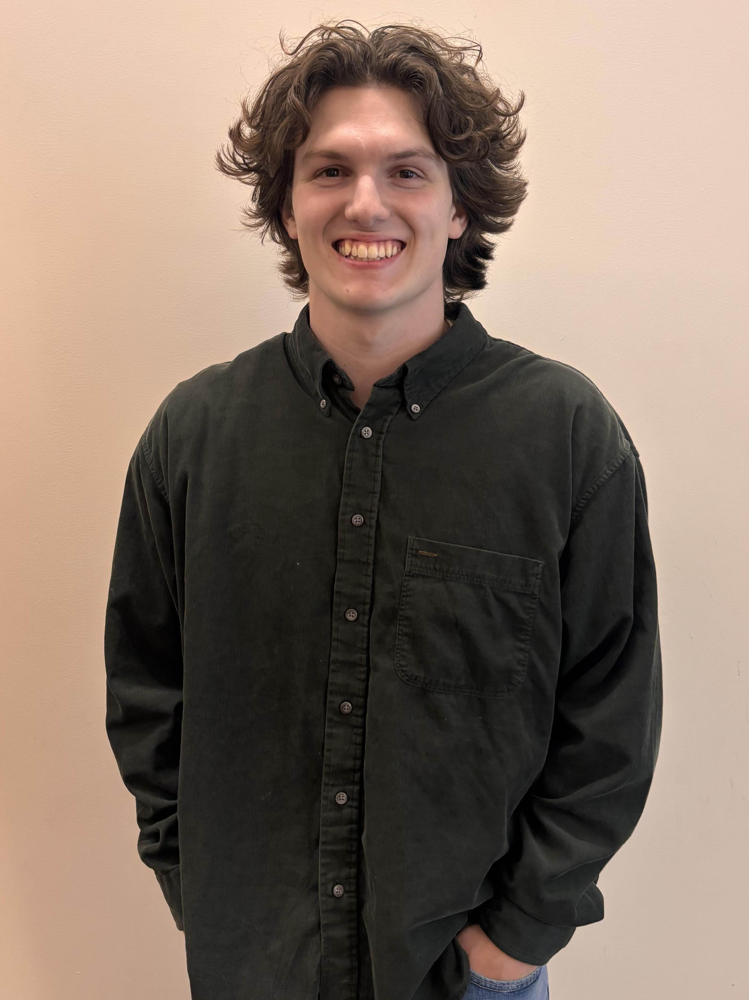

I’m a junior at Columbia College studying Graphic Design and Marketing. I’ve always been interested in how visuals and communication work together to tell a story, whether that’s through design, branding, or illustration. When I’m not working on design projects, I enjoy reading, drawing, and occasionally convincing myself to go for a run. I also like watching movies and probably overanalyzing them more than most people would.
This website is my first real attempt at building a personal site, and it will eventually grow into my full design portfolio. As I continue learning and developing my skills, I plan to use this space to share projects, experiments, and work that reflect both my creative interests and my professional growth as a designer.
My design preferences tend to lean toward bold but simple visual choices. Orange and green are my favorite colors, and my favorite typeface is Futura because of its clean, geometric style. I am especially interested in sequential storytelling, comics, and visual narratives. I enjoy exploring how images, layout, and pacing can work together to guide a viewer through a story.
At Columbia College, I work as an intern with the Center for Social Media and Alumni Communications (CSMAC) in the Business School. In this role, I help create graphics and social media content that support the college’s communication and outreach efforts. I also work as the Graphics Lab Monitor, where I help maintain the design workspace and assist other students who are working on creative and digital media projects.
As I continue developing my skills in graphic design and marketing, I am excited to keep exploring the connection between design and storytelling. This website will grow along with my work and serve as a place to document that process.